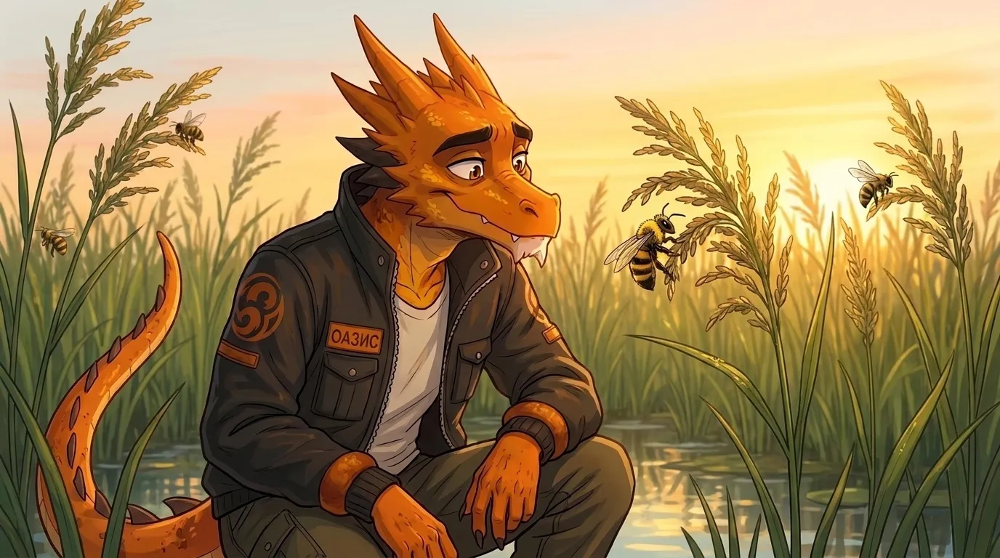
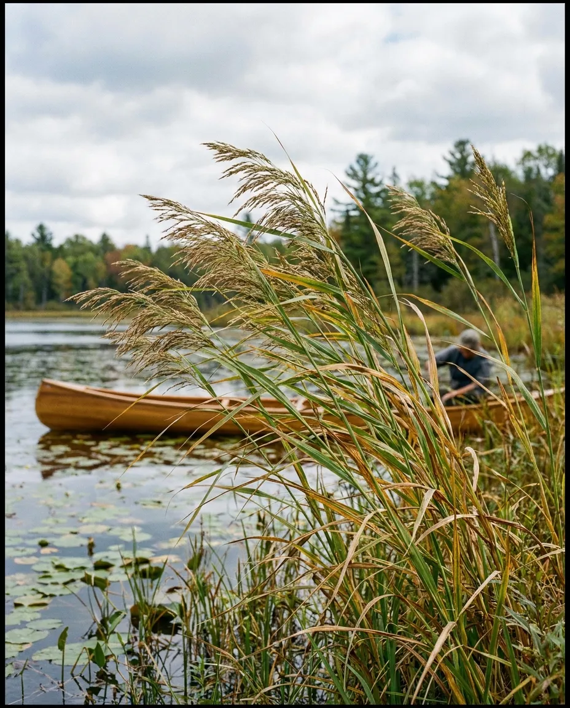
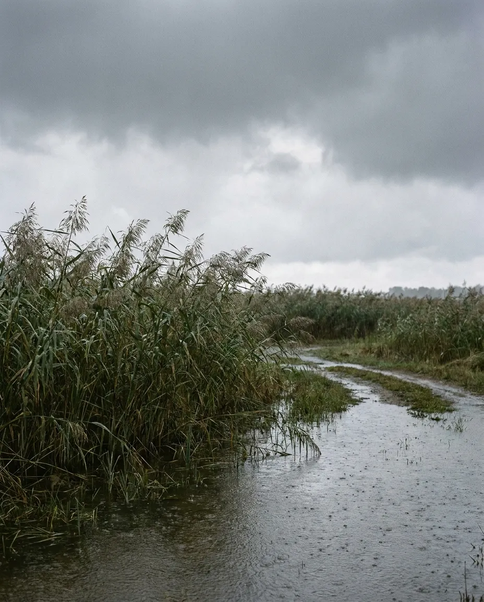

ЦИЦАНИЯ
Цицания, или дикий рис, — однолетнее болотное водное растение семейства Злаки. В естественном ареале она произрастает в реках, озёрах и по берегам прудов Северной Америки и Восточной Азии.
В России цицания встречается в дикой природе, куда была интродуцирована в начале XX века, а также культивируется на небольших производственных участках. Культура представляет интерес как альтернативный злак и альтернатива настоящему рису.
Селекционная работа направлена на получение скороспелых и технологичных форм, пригодных для выращивания в контролируемых чеках и механизированной уборки.

Направления селекции
- Скороспелость
- Устойчивость к осыпанию зерна
- Возможность механизированной уборки
- Равномерность созревания
- Короткостебельность
- Увеличение массы 1000 зёрен и общей продуктивности
- Адаптация к контролируемым чекам с возможностью сброса воды перед уборкой
